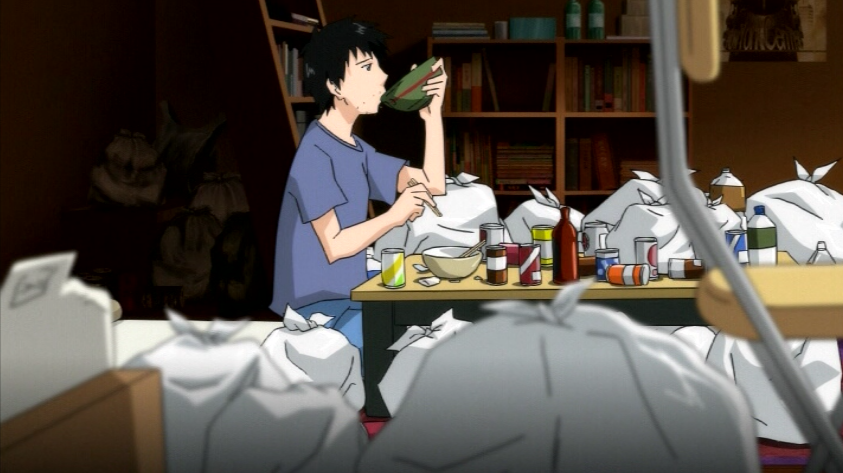
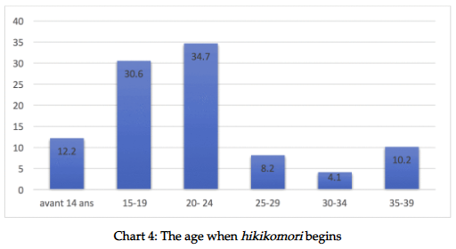

Social Impact of Hikikomori in Japan

The immediate issue with hikikomori is the stress it places on the hikikomori's parents. Because hikikomori children are unwilling/incapable of providing for themselves, their parents end up taking care of them. If they live with their parents, their parents make them food. If they live alone, their parents will send them money. Either way, parents of hikikomori children have this additional financial burden to deal with, not to mention the emotional stress that comes with having a hikikomori child. For some of these parents, it is difficult for them to seek help from their friends or relatives since they would have to reveal that they have a hikikomori child which is considered shameful.
Another issue presented by hikikomori is the inability of hikikomori children to take care of themselves. There will be a day when their parents will stop supporting them, but when that time comes, will they be prepared to take responsibility for their own lives? Not only that, but the longer they live as hikikomori, the harder it is for them to change. They will also have less time to adapt to the realities of society. Named the "2030 problem", the issue is that by the year 2030, many hikikomori will be turning 60, and also around that time, they will lose external support. To make things worse, at that age, it will be extremely difficult for them to reintegrate into society.
As people become hikikomori, people leave the workforce. This becomes a concern to Japan's economy since people from as young as early adolescence to late adulthood just disappear.
